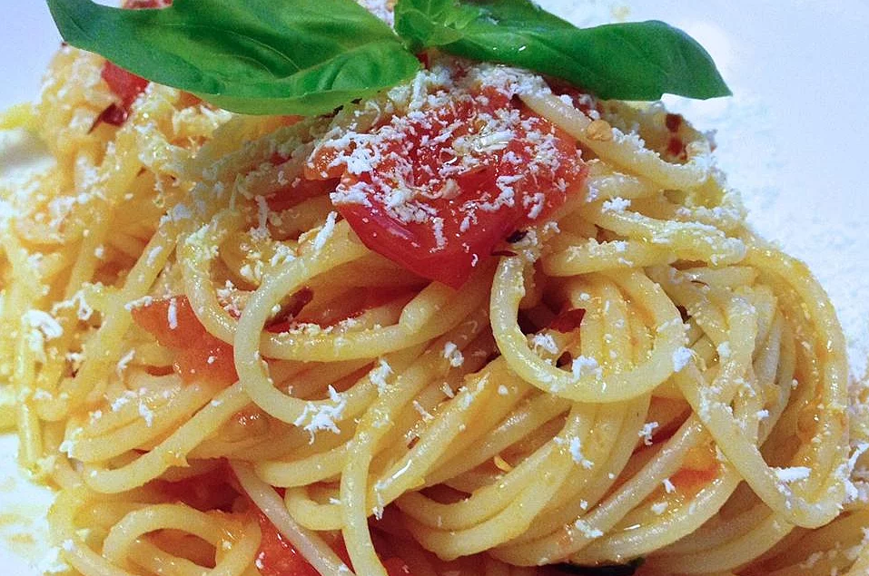

Onion Spaghetti

Onion Spaghetti is a great filling vegetarian dish that comes with a BANG! You would never guess that it's vegetarian!
Ingredients
- 2 tablespoons olive oil
- 4 large olive onions, sliced
- 2 cloves garlic, crushed
- 1 tablespoon tomato paste
- 1 (14.5 ounce) can whole peeled tomatoes
- 1 tablespoons salt
- 1/2 tablespoon freshly ground black pepper
- 1 tablespoon chopped fresh basil
- 1/4 cup water
- 1 pound spaghetti
Directions
- Heat oil in a large skillet over medium heat
- Cook onions and garlic in oil untul soft
- Stir in tomato paste, tomatoes, salt, pepper, basil and water
- Cover, reduce heat to low, and simmer 20 minutes, until thickened
- while sauce is simmering, bring a large pot of lightly salted water to a boil
- Add pasta and cook for 8 to 10 minutes or until al dente, drain
- Toss sauce with hot pasta
Return to main page